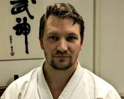
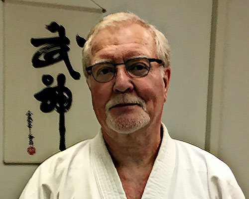
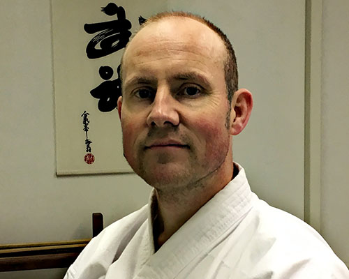

Ryukyu Kobujutsulla tarkoitetaan Ryukyu saariryhmällä harjoitettuja vanhoja asetekniikoita. Okinawa on näistä saarista suurin ja siksi lajia kutsutaan usein myös nimellä Okinawan Kobujutsu.
Kobujutsuun kuuluvia aseita ovat alun perin käyttäneet vuosisatoja sitten siviilit itsepuolustukseen sekä Okinawan kuninkaan henkivartijat.
Ryukyu kobujutsu on osa perinteistä karatea ja vaikka nykyisin karate onkin aseeton laji, ovat nämä kaksi aikaisemmin muodostaneet yhden kamppailutaidon, minkä takia niillä on paljon yhtäläisyyksiä muun muassa perusasennoissa ja liikkumisessa.
Lisätietoja lajista osoitteessa "kobujutsu.fi".
Kaikissa harjoituksissa harjoitellaan Ryukyu Kobujutsua ja ne ovat avoimet kaikille seuran jäsenille. Yuishinkai Karatea pääsee harjoittelemaan näillä näkymin syyskaudesta alkaen.
Seuran jäsenenä voi halutessaan harjoitella ainoastaan jompaa kumpaa haluamaansa lajia, tai vaikka molempia.
Harjoituksia on kesäkaudella 2017 (29.5. - 14.8.2017) kerran viikossa:
Syyskaudella 2017 (21.8. - 31.12.2017) harjoitusajat ja -paikat ovat:
Viikottaisten harjoitusten lisäksi on mahdollisuus noin kerran kuussa keskittyä itselleen haastaviin tekniikoihin vapaamuotoisemmassa harjoituksessa, jossa paikalla ovat seuran ohjaajat, mutta jossa kukin harjoittelee itsenäisesti. Näitä harjoituksia on seuraavina ajankohtina:
Eri maksujen suuruuksista päättää seuran vuosikokous. Jäsen- ja harjoitusmaksut maksamalla voi osallistua kaikkiin seuran harjoituksiin.
Vuonna 2017 jäsenmaksu on 20 EUR/vuosi ja puolivuosittainen harjoitusmaksu on 60 EUR, jonka voi maksaa kerralla koko vuodeksi niin halutessaan.
Kannatusjäsenmaksu on vapaavalintainen summa, vähintään 50 EUR. Ainaisjäsenmaksu on 200 EUR.
Maksut osoitetaan Espoon Yuishinkai ry:n tilille IBAN FI25 3939 0057 1648 81, BIC SBANFIHH.

Jukka Paasonen (Kobujutsu 3 dan, Karate 3 dan)

Kari Sysimiilu (Kobujutsu 3 dan, Karate 1 dan)

Kimmo Kara (Kobujutsu 1 dan, Karate 1 dan)
Yhteydenotot sähköpostilla, sähköpostiosoitteet ovat muotoa "etunimi.sukunimi (at) kobujutsu.fi".